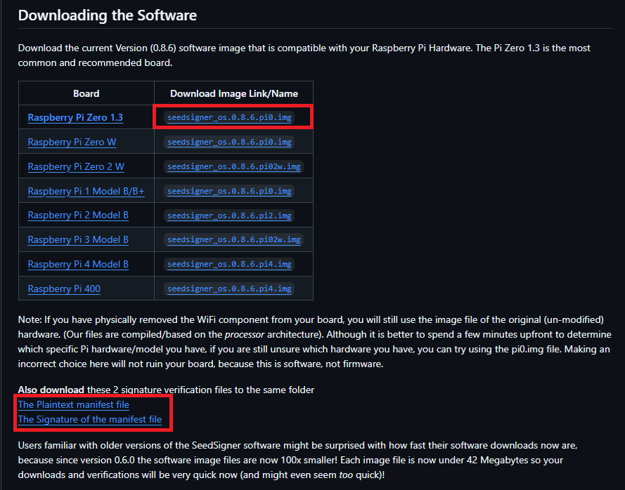
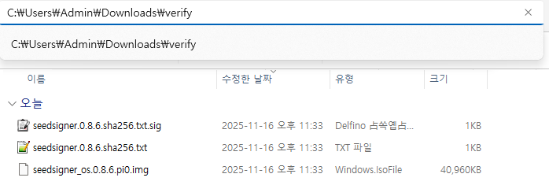
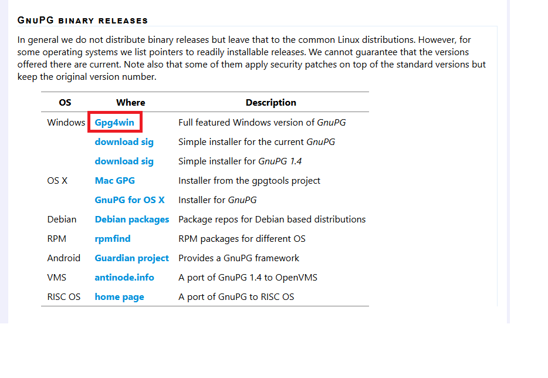
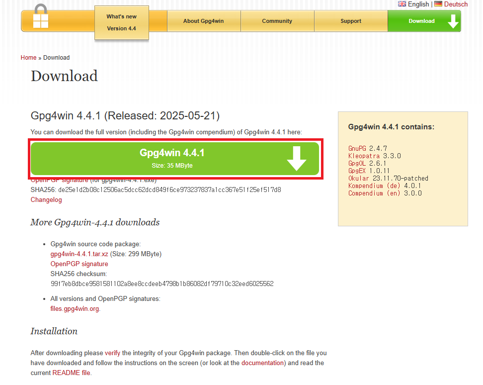
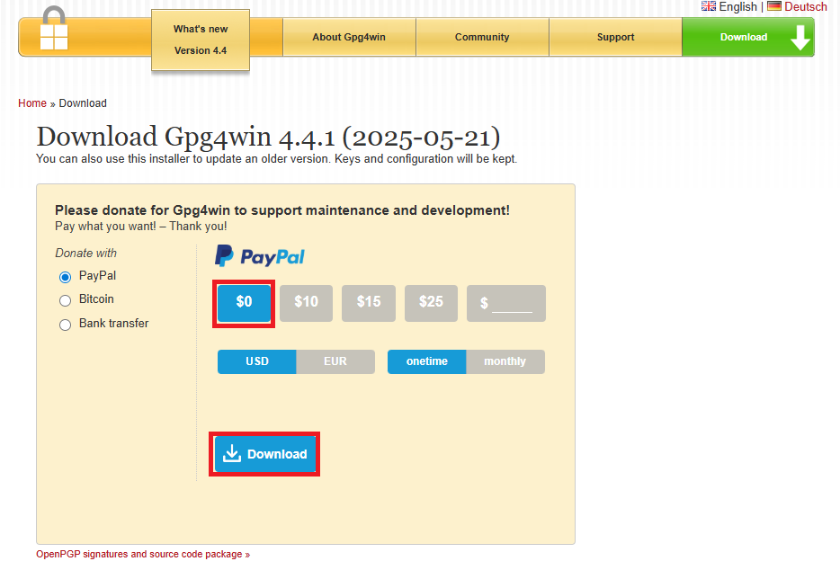
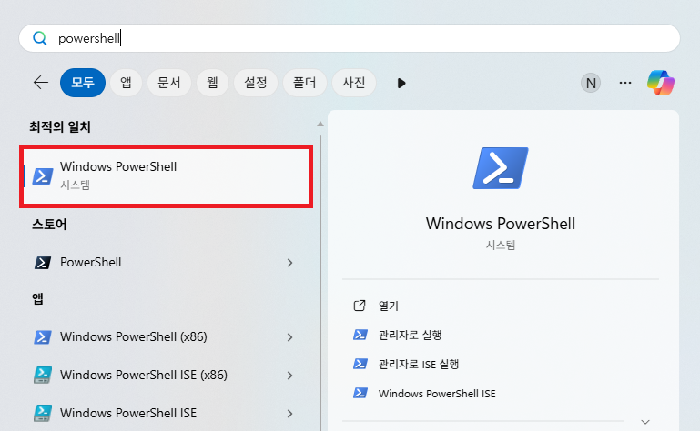
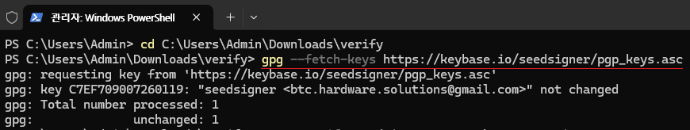
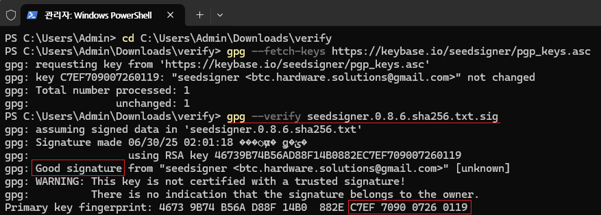
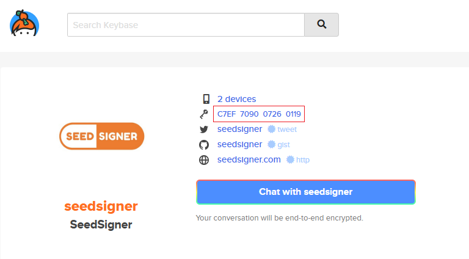
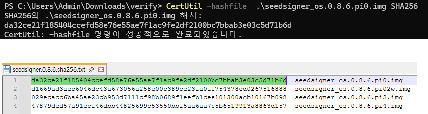

왜 검증하나요?
두 가지를 확인합니다.
- 서명SeedSigner 팀이 만든 파일인가GPG 서명으로 해시 목록 파일의 작성자를 확인합니다.
- 해시받는 동안 바뀌지 않았는가이미지의 SHA256 해시가 목록과 한 글자도 다르지 않은지 봅니다.
STEP 01
파일 세 개를 한 폴더에 받습니다.
이미지 파일과 함께, 해시 목록과 그 서명 파일이 필요합니다.
-
SeedSigner GitHub에서 받습니다.
SeedSigner GitHub · Downloading the Software 표에서 Pi Zero 1.3 이미지를, 표 아래 Also download these 2 signature verification files에서 두 파일을 받습니다.

- OS 이미지
seedsigner_os.0.8.7.pi0.img- 해시 목록
seedsigner.0.8.7.sha256.txt- 서명
seedsigner.0.8.7.sha256.txt.sig
-
세 파일을 같은 폴더에 둡니다.
예시처럼
다운로드\verify폴더를 만들어 모아 두면 이후 명령어를 그대로 쓸 수 있습니다.
STEP 02
Gpg4win 설치
GPG(GNU Privacy Guard)는 디지털 서명을 확인하는 무료 오픈소스 도구입니다. Windows용 배포판이 Gpg4win입니다.
-
GnuPG 다운로드 페이지에서 Gpg4win을 찾습니다.
gnupg.org/download 를 아래로 스크롤해 GnuPG binary releases 표의 Gpg4win을 누릅니다.

-
Download를 누릅니다.

-
받은 설치 파일을 실행해 설치합니다.
기본 옵션 그대로 설치하면 됩니다.

STEP 03
서명 검증
PowerShell에서 SeedSigner의 공개키를 받아, 해시 목록 파일의 서명을 확인합니다.
-
PowerShell을 엽니다.
시작 메뉴에서 PowerShell을 검색해 실행합니다.

-
파일을 모아 둔 폴더로 이동합니다.
>
cd $HOME\Downloads\verify다른 폴더에 받았다면 그 경로로 바꿔 입력하세요.
-
SeedSigner 공개키를 가져옵니다.
>
gpg --fetch-keys https://keybase.io/seedsigner/pgp_keys.asc
-
서명을 확인합니다.
>
gpg --verify seedsigner.0.8.7.sha256.txt.sig
-
결과에서 두 가지를 확인합니다.
- 서명 결과
Good signaturefrom "seedsigner"- 키 지문 끝 16자리
C7EF 7090 0726 0119— Keybase와 같아야 합니다
keybase.io/seedsigner 에 표시된 키와 터미널의 Primary key fingerprint 끝자리를 직접 비교하세요.

WARNING: This key is not certified with a trusted signature! 문구는 정상입니다. 내 PC가 이 키를 따로 '신뢰' 표시하지 않았다는 뜻일 뿐이며, 지문을 Keybase와 비교하는 것으로 확인을 대신합니다. 반면 BAD signature가 나오면 파일을 지우고 다시 받으세요.
STEP 04
해시 비교
서명으로 확인한 해시 목록과, 내가 받은 이미지 파일의 해시가 같은지 봅니다.
-
이미지 파일의 SHA256 해시를 계산합니다.
>
CertUtil -hashfile .\seedsigner_os.0.8.7.pi0.img SHA256 -
해시 목록 파일과 비교합니다.
seedsigner.0.8.7.sha256.txt를 메모장으로 열고,pi0.img줄의 값이 위에서 계산한 값과 전부 같은지 확인합니다.